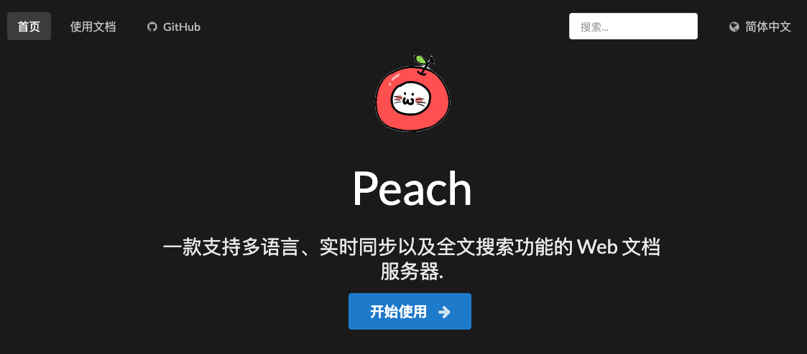

polarisxu 对话无闻
大家好，我是站长 polarisxu。
今天起，我计划起一个系列，叫做「对话 xxx」，主要访谈、撰写一些圈里人的成长故事，希望他们的故事对大家有一些启发。
今天要对话的这位是国内 Go 开源界的名人，GitHub followers 有 11.1k+，主导了开发了好几个 Go 开源项目，它就是无闻，昵称 unknwon（注意，不是 unknown）。早期学习 Go 的小伙伴，知道他可能更多是来自他的视频教程。不管什么方式，希望本文对有些读者有帮助。
01 与 Go 结缘
早在无闻读高中时，我们就认识了（没见过面，网上认识）。因为我接触 Go 比较早，2012~2013 年就创建了 Go 社区。具体怎么联系上的，不记得了。
2013 年上半年，他开始制作 Go 语言视频教程，我印象特别深的是，那年清明节左右，我在度蜜月，还每天和他交流 Go 语言，主要探讨视频制作的知识点，他很严谨，怕知识点讲解有误，和我交流、探讨确认。一口气，他制作了 《Go编程基础》 、《Go 名库讲解》 、《Go Web基础》 等视频教程。所以早期学习 Go 的小伙伴，很多都是看无闻的视频入门的。
但很多人也许不知道，他的这些视频是边学 Go 边制作的，这就是所谓的通过输出做到更好的输入，教别人是最有效的学习方法。
当然在这背后还隐藏着其他不为人知的故事。
其一：VBA 起家
无闻是一个文科生，是不是很惊讶？2010 年就出国，在国外读的高中。因为 2 点半就放学，很无聊，然后研究 Excel。有些人也许不知道，Excel 是支持编程的，那就是 VBA（Visual Basic for Applications），这是一种宏语言。基于 VBA 做了一个简单的账本。这算是编程的入门。
学了 VBA 后，不满足于它，可能也对编程产生了兴趣，同时由于 VBA 算是 VB 的子集，所以又去学习了 VB 6.0。用 VB 6.0 做了一些工具，在网上也得到了一些前辈友善的指导，这让他拓展了很大的知识面。
接着，无闻还学习了易语言，对，没错，就是那个中文语言。易语言是 C++ 实现的，但它和 VB 一样，提供了很多方便的编程接口，包括提供方便的图形化编辑环境，使得有 VB 基础的学习易语言比较容易。
其二：做视频教程，学习 Go
2011 年开始学习 C#，在学习 C# 的过程中，就一边学习一边做视频教程。所以，Go 视频教程才会做的比较好。
那时正是 Web 2.0 比较火的时候，Web 开发是比较受欢迎的。无闻发现，PHP 是那时候 Web 开发最欢迎的。于是准备学习 PHP，相关图书都买好了（寄到国外的哦）。但无意中，他在 GitHub 上看到了 https://github.com/astaxie/build-web-application-with-golang 这本书，捣鼓了一下 Go，发现它的运行方式和易语言很像（都是编译为二进制文件）。因为自己有强迫症，而 Go 语言的工具链很好的解决了这些问题，不再有选择的痛苦，大家写的代码风格几乎一样。
于是 2013 年无闻开始学 Go 语言，并做了上面的视频教程和翻译一些 Go 资料，比如国外另外一本讲解很全面的 Go 语言图书：《The Way to Go》，无闻向作者要到了授权，翻译成中文，在 GitHub 上免费提供给大家阅读，目前已经有 25.1k+ Star：https://github.com/unknwon/the-way-to-go_ZH_CN 。
我总结一下无闻的 Go 学习之路：
- 通过 VBA 进入编程世界；
- 因为易语言和 C# 的视频制作经验，爱上 Go 并制作了优秀的视频教程；
- 通过制作更多的 Go 视频教程，翻译优秀教程以及名库讲解，打好自己的 Go 基础，同时回馈 Go 社区；
02 开源之旅
做开源可能是一种巧合，因为对 Git 的喜爱，加上 GitHub 私有库是收费的（现在他已经是 GitHub PRO，而且在 GitHub 上赞助其他人），同时 Go 语言的生态都是基于 GitHub。所以，那时候只是知道将自己的代码放在 GitHub 上公开，并不知晓这原来就是开源。
后来对开源接触越来越多，发现开源项目都比较优秀，有一些管理相关的模板。
对于 gogs 这个开源项目，主要对 Ruby 不太喜欢，不太喜欢笨重的环境，虽然有 GitLab，但想要用 Go 实现一个。因此和朋友一起开始搞 gogs。
在做 gogs 时，无闻对数据库还是一无所知的状态。有着强烈学习的意愿，开发 gogs 的过程中，涉及到很多的基础东西，都从头实现了一遍。比如：
- github.com/go-macaron/macaron：一个 Web 框架，以及其他一些框架的设施，都是自己从头实现；
- github.com/go-ini/ini：超赞的 Go 语言 INI 文件操作库；
- github.com/go-macaron/i18n：gogs 是一个国际项目，自然需要国际化；
- github.com/unknwon/cae：类似 PHP 风格的压缩和归档库；
- github.com/unknwon/com：一些经常使用的便利函数；
- github.com/go-clog/clog：基于 channel 的日志库；
- 。。。
除了 gogs，还有其他一些知名的项目，比如 gowalker 、gopm（已关停）等。所有这些，都是它在学习、实践过程中遇到了问题，然后自己将它解决掉。可能解决方案不是最好的，甚至市面上已经有其他解决方案了，但自己实现它，给无闻带来的收益是巨大的。
大家可能没有注意，他的开源项目，很多都有漂亮的网站或独立文档站，而且基本这些站也是自己实现的。因为开源项目，文档很重要，于是他用 Go 实现了一个，这就是 peach ：一个用于多语言，实时同步和可搜索文档的 Web 服务器。

他实现这些，顺便把前端相关技术也学习了。
参与开源，不一定一上来就是参与者，也可以是反馈者，通过反馈慢慢融入这个项目，实际上将问题反馈清楚也是一种挑战。
无闻的理念：自己学习阶段，通过造轮子，把自己往“死”里整，什么新技术都尽量用上，多想想这项技术解决了什么问题，通过项目提升自己能力。
03 划重点
通过对无闻步入编程世界，回顾了他学习 Go 语言的经历，以及进行 Go 开源的心得体会，我认为有以下几点值得大家借鉴，特别是对于后浪们，比如还是在校学生。
一、越早学习越好
在股票基金投资中，很强调时间，因为复利效应很可怕。学习也是一样。对于编程学习来说，你开始的越早，就越早的走在同辈的前列，比如无闻，虽然是文科生，但高中就开始接触编程，并自发的进行各种学习、研究，做视频、做项目，进行主动学习。我特别欣赏那些还在读书的人能够积极融入各种社区的圈子。不管是开源项目，还是社区的一些活动、群等，其中有大学生的话，我会特别注意他，觉得他前途无量。
想想我的大学生活，只是沉浸在校园生活中，对业界发生的事情一无所知。这注定起点就比那些早早接触外界的人低。所以，我强烈建议你现在就开始认真学习，无闻经历也许可以借鉴。
而且，你越早学习，越早了解外界，越早工作，你的能力、薪资等大概率会比同龄人强。何况都说程序员吃青春饭，所以更应该提前学习。尽早多接触外界，外界的人和事。
二、兴趣是最好的老师
工作很多时候是为了生活，但你不能全无兴趣。而且，我认为兴趣也是可以培养的，要善于发现生活的美。只要你不讨厌它，慢慢的，你大概率可以喜欢它。大家可以想想生活中，你看到一个女生，觉得一般，时间长了，接触多了，有没有觉得还挺好看的，属于耐看型？哈哈哈哈，对吧，需要培养！
无闻能够做这么多项目，我相信一定是对这些事情是有兴趣的，而且做成了很有成就感，更进一步增加了兴趣。抱着喜欢它去学习，而不是太功利的，目标就是通过它找到一个好工作。其实只要你学好了，学透了，好工作是自然的。
三、通过输出倒逼输入
学习别只是看。无闻的经历很明显，他通过边学习边做视频，进步很快。你不一定非得做视频，但至少应该做做笔记，写写文章。写出来的东西，一定通过网络发布，比如微信公众号，这样督促自己更严谨。
其次，一定要实践。你别跟我说：不知道用 Go 写点什么。那是你根本没有思考，对自己不够狠。能写的东西很多。再不济，参与一些你喜欢的开源项目也可以，比如提提 typo 也是可以的，关键要迈出第一步。
认清自己，看自己的长处。通过输出，倒逼自己输入，让输入更高效！
希望通过「对话无闻」能够对大家有帮助！